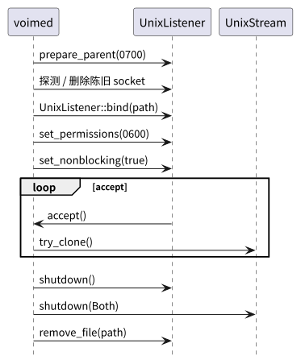
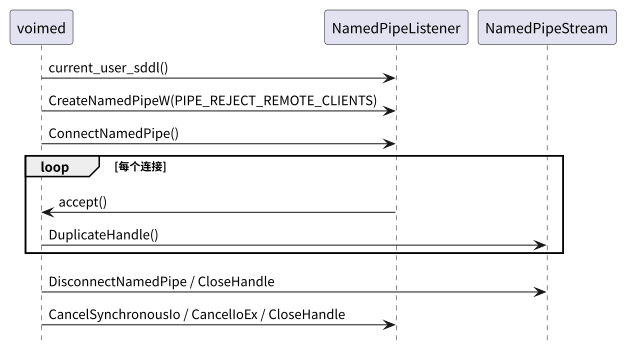

根：README USER CORE PROVIDER BUILD ｜ 本组件：README USER CORE BUILD
本文只记录 voime-transport 消费的 OS 传输子集。完整语义以平台官方文档为准；
上层契约见 USER。
| 术语 | 定义 |
|---|---|
| Unix domain socket | Linux 本机字节流端点；由文件系统路径标识。 |
sockaddr_un | Unix socket 地址结构；sun_path 存放路径。 |
| 文件权限位 | 父目录 0700、socket 0600；只允许同 UID 访问。 |
| named pipe | Windows 本机字节流端点；由 \\.\pipe\<name> 标识。 |
| DACL | 命名管道的访问控制列表；只授予当前用户。 |
| 会话 ID | Windows 登录会话标识；管道名包含它，避免跨会话冲突。 |
PIPE_REJECT_REMOTE_CLIENTS | 拒绝远程客户端连接的管道标志。 |
ConnectNamedPipe | 服务端等待客户端连接的 Win32 调用。 |
DuplicateHandle | 复制管道句柄，供读写线程独立使用。 |
DisconnectNamedPipe | 断开一个管道实例；与 CloseHandle 一起释放连接。 |
| 约定 | 内容 |
|---|---|
| 端点命名 | Unix 使用文件系统路径；Windows 使用 \\.\pipe\voime-<session>-<user>。 |
| 权限 | Unix 父目录 0700、socket 0600；Windows 当前用户 DACL + 拒绝远程客户端。 |
| 陈旧端点 | Unix 启动时尝试连接；失败则删除旧 socket。Windows 管道句柄关闭即消失；bind 前检查已有 daemon。 |
| 阻塞与取消 | accept / read 可阻塞；shutdown 必须能取消。Unix 使用非阻塞 + 短睡眠或可中断 accept；Windows 使用 overlapped / CancelIoEx。 |
| 读写分离 | Unix try_clone 复制 fd；Windows DuplicateHandle。 |
| 关闭顺序 | 先停止 accept，再关闭所有 stream，最后删除端点。 |
| 错误映射 | 统一转 io::Error，保留路径 / 管道名 / Win32 错误码上下文。 |
| 不使用 TCP | 不使用 loopback TCP：防火墙提示、端口冲突、同机任意进程可连接。 |


| 调用 / 类型 | 用途 |
|---|---|
UnixListener::bind(path) | 绑定路径并创建监听 socket。 |
UnixListener::accept() | 接受连接；非阻塞模式下返回 WouldBlock。 |
UnixListener::set_nonblocking(true) | 让 accept 线程可轮询关闭标志。 |
UnixStream::connect(path) | 客户端连接；用于陈旧端点探测。 |
UnixStream::try_clone() | 复制 fd 供读写线程分离。 |
UnixStream::shutdown(Shutdown::Both) | 关闭读写并唤醒阻塞 read。 |
std::fs::set_permissions(..., 0o700 / 0o600) | 设置目录 / socket 权限。 |
| 调用 / 类型 | 用途 |
|---|---|
CreateNamedPipeW | 创建管道实例；指定 PIPE_ACCESS_DUPLEX 与安全描述符。 |
ConnectNamedPipe | 等待客户端连接；可阻塞或 overlapped。 |
DisconnectNamedPipe | 断开实例，准备复用或关闭。 |
DuplicateHandle | 复制读写句柄。 |
CancelIoEx / CloseHandle | 取消阻塞 I/O 并释放资源。 |
PIPE_REJECT_REMOTE_CLIENTS | 拒绝远程客户端。 |
ConvertStringSecurityDescriptorToSecurityDescriptorW | 构造当前用户 DACL。 |
| 关注点 | Unix | Windows |
|---|---|---|
| 同机其他用户 | 目录 0700 / socket 0600 阻止 | 当前用户 DACL 阻止 |
| 远程客户端 | AF_UNIX 不支持远程 | PIPE_REJECT_REMOTE_CLIENTS |
| 跨会话 | 路径位于用户 runtime / tmp | 管道名包含会话 ID；不使用 Global\ |
| 端点被替换 | bind 前探测活动 daemon | 管道句柄唯一；关闭即消失 |
| 错误信息泄漏 | 路径上下文可记录 | 错误码 + 管道名；不记录安全描述符内容 |
| 平台错误 | 触发条件 | 项目行为 |
|---|---|---|
EADDRINUSE / 端点可连接 | 已有 daemon。 | 返回“daemon 已在运行”；daemon 幂等退出。 |
EACCES / EPERM | 目录 / socket / DACL 权限不足。 | 返回带路径的错误；不放宽权限。 |
ECONNREFUSED / ENOENT | 端点不存在或陈旧。 | 客户端重试；daemon 清理。 |
ERROR_PIPE_BUSY | 管道实例忙。 | 等待或重试；按上层重连策略处理。 |
ERROR_ACCESS_DENIED | DACL 拒绝。 | 返回权限错误；检查运行用户。 |
ERROR_OPERATION_ABORTED | shutdown 取消 I/O。 | 视为正常关闭。 |